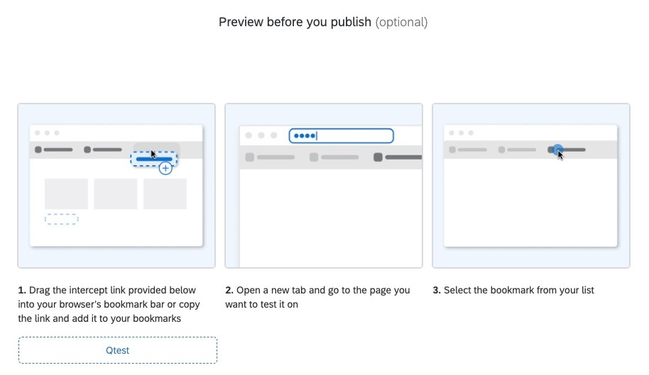

More Then Faster
Where you can test your intercepts.
Working in our Restaurant means being part of our Family,
Always ensure to ask for help. We are a team!
About Testing
Welcome To WAF testing. WAF testing is a safe place where you can test your intercepts without waiting on credentials or waiting for more information from the client.
Currently on WAF we can test intercepts with different tools! 1 of them embedded in Qualtrics and 2 of them outside Qualtrics.
How can I test an intercept with Qualtrics tools?

You can test an intercept with the famous book marklet!
The bookmarklet in Qualtrics Website/App Feedback (WAF) is a tool that allows you to test your intercepts without activating them. It is particularly useful for previewing how an intercept will appear and behave on a webpage before making it live.
Features of the Bookmarklet:
The bookmarklet is an essential tool in Qualtrics Website/App Feedback (WAF) because it allows users to test intercepts without activating them.
The bookmarklet in Qualtrics Website/App Feedback (WAF) is a tool that allows you to test your intercepts without activating them. It is particularly useful for previewing how an intercept will appear and behave on a webpage before making it live.
Features of the Bookmarklet:
- Testing Intercepts: You can test intercepts on any webpage without publishing them.
- Previewing Changes: It allows you to see how your intercept will look and function with the latest changes, even if those changes are unpublished.
- Ease of Use: The bookmarklet is added to your browser's bookmarks bar, and you can activate it with a single click while viewing the target webpage.
-
Save the Bookmarklet:
- Go to the Test Intercept section in your Qualtrics project.
- Drag the bookmarklet to your browser's bookmarks bar.
-
Open the target Webpage:
- Navigate to the webpage where you want to test the intercept.
-
Activate the Bookmarklet:
- Click on the bookmarklet in your bookmarks bar. This will load the intercept on the webpage.
-
Test the Intercept:
- Interact with the intercept to ensure it behaves as expected. A window in the lower-left corner will notify you of any issues.
The bookmarklet is an essential tool in Qualtrics Website/App Feedback (WAF) because it allows users to test intercepts without activating them.
Advantages of the bookmarklet
-
Test Intercepts Without Activation
- The bookmarklet enables you to preview and test intercepts on any webpage without making them live. This ensures that your intercepts are functioning correctly and meeting your requirements before they are visible to your website visitors.
-
Preview Unpublished Changes
- If you’ve made changes to an intercept but haven’t published them yet, the bookmarklet allows you to see how those changes will look and behave. This is especially useful for testing new designs, logic, or targeting criteria.
-
Save Time and Resources
- By using the bookmarklet, you can test intercepts directly on your website without needing to involve your IT team or deploy changes to your live environment. This streamlines the testing process and reduces the risk of errors.
-
Test Across Different Pages
- The bookmarklet allows you to test intercepts on any page of your website. This is particularly useful for ensuring that intercepts appear correctly on pages with different layouts, content, or user flows.
-
Debugging and Troubleshooting
- The bookmarklet provides feedback on whether the intercept logic is working as intended. If there are issues, such as incorrect targeting or display conditions, the tool can help identify and resolve them before the intercept goes live.
-
Supports Advanced Testing
- The bookmarklet can be used in conjunction with browser developer tools to test advanced scenarios, such as setting custom variables (e.g., UserID or externalReference) or simulating different devices and screen sizes.
-
Ensures a Seamless User Experience
- By testing intercepts thoroughly with the bookmarklet, you can ensure that they do not disrupt the user experience on your website. This helps maintain a professional and user-friendly digital presence.
How can I test an intercept outside Qualtrics?
You can test an intercept with 2 different tools:
- Plunker
- MAMP (WAF Bistro project)
CREATIVE MENU